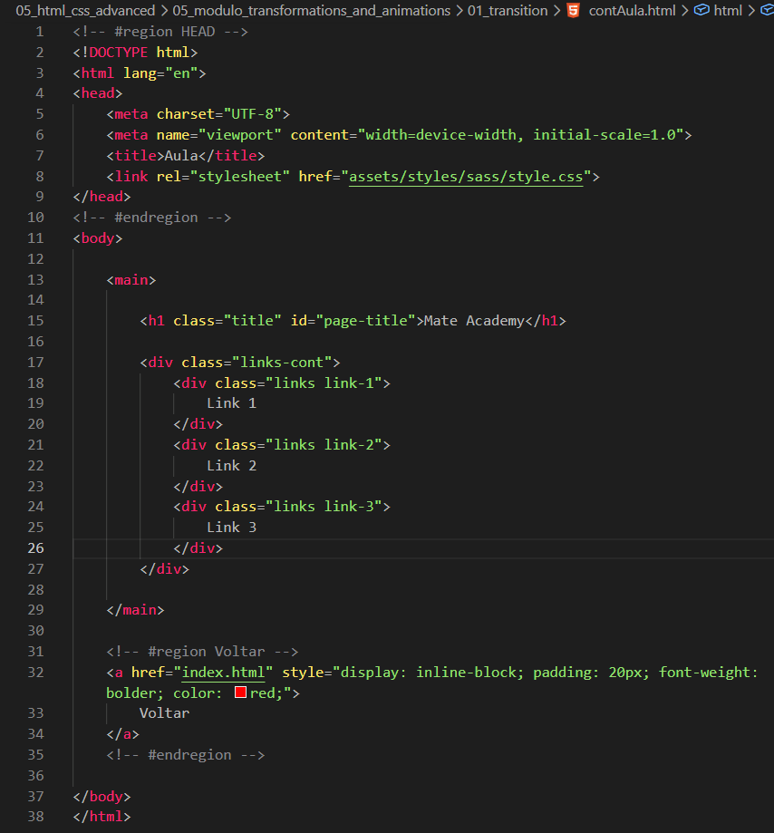
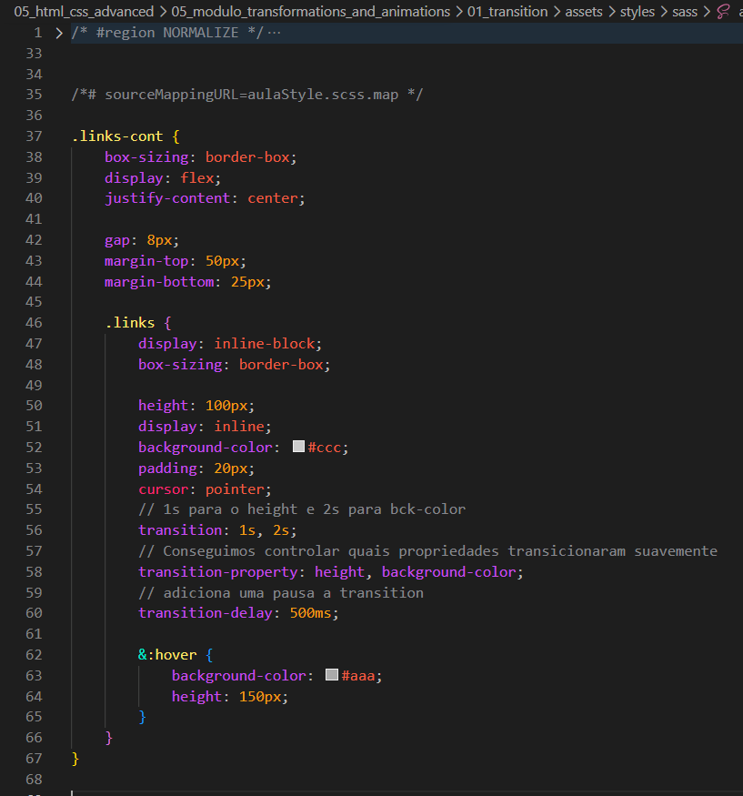

Transition
Intro
Aqui iremos ver sobre animações e mudanças suaves de estilos e sua importância.
Aqui iremos ver sobre animações e mudanças suaves de estilos e sua importância.
HTML:

CSS:

Controla apenas o tempo da animação. Pode ser usada junto com outras propriedades de transition.
Exemplo 01: transition-duration: 1, 2s;
Exemplo 02: transition-duration: 1s;
Define quais propriedades terão a transição aplicada.
Valores possíveis: opacity, height, background-color, transform, visibility.
Exemplo: transition-property: height, background-color;
A propriedade opacity é a mais usada para efeitos de aparecer/desaparecer. A propriedade visibility pode ser combinada com opacity, mas não possui transição suave sozinha.
Permite adicionar um atraso antes da animação começar após o evento (como hover).
Define a velocidade da animação ao longo do tempo (curva de aceleração).
Exemplo: transition-timing-function: linear;
Outros valores incluem: ease, ease-in, ease-out, ease-in-out, steps().
Propriedade abreviada que reúne todas as anteriores em uma única linha. A ordem correta é: property, duration, timing-function, delay.
Exemplo correto:
transition: height 1s ease-in 100ms;